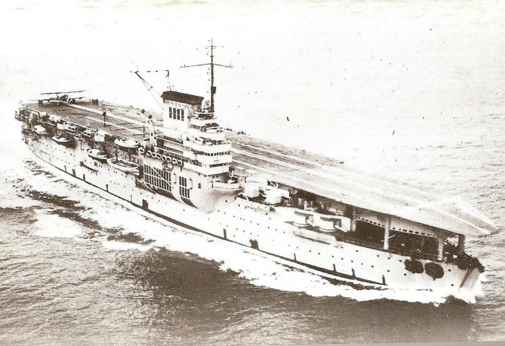

{kind=link}

| Le Porte-Avions | |||
|---|---|---|---|
|  | Bearn |
Le Bearn est le seul porte-avions en service dans la Marine nationale francaise jusqu'en 1945 (date du passage sous pavillon francais du Dixmude). C'etait initialement la cinquieme unite du dernier type de cuirasses dreadnought de la classe Normandie mise sur cale avant la Premiere Guerre mondiale et jamais achevee. Seul le Bearn subira une refonte, apres la premiere guerre mondiale, avant le demantelement des coques inachevees des quatre autres unites. Enfin, le Bearn sert de ponton pour les equipages de sous-marins a Toulon jusqu'en 1965 et est demantele en 1967 en Italie. |
Longueur : 183 m Maitre-bau : 27,1 m (flottaison), 31 m ht puis 35 m ht apres 1935 Tirant d'eau 9 m Deplacement : 25 000 tonnes Propulsion : 2 chaudieres type Normand-du-Temple, 2 turbines centrales, 2 alternatives laterales, 4 helices Puissance : 37 200 ch Vitesse : 21,5 noeuds |
Retrouver la page complète sur Github UwU
Vous pouvez me contacter sur Discord via mon # = Alice(SaabniaTv)#0001 ou via mon serveur discord